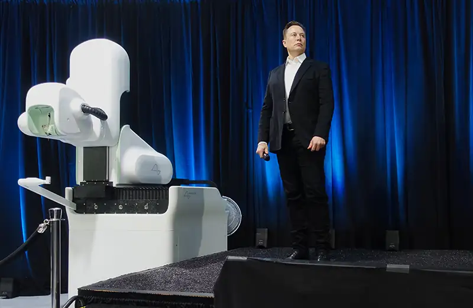
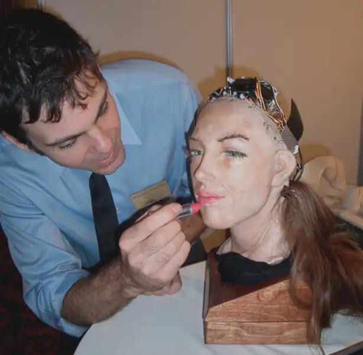

Chapter 10: Applied Ethics¶
Introduction¶
Most of us think about ethical issues in our everyday lives. We might wonder, for instance, whether we have an obligation to reduce our use of plastics because of their impact on the environment. We might question whether we treated someone fairly at work or whether we acted in a way that was morally problematic. When we reflect on whether a given action is right or wrong, we are doing applied ethics. We attempt to determine the rightness of some specified action through moral deliberation and the application of ethical principles and norms. Questions in applied ethics focus on whether some action is right, and philosophers apply diverse perspectives when analyzing the morality of a specific action.
Developments and advances in areas like technology and medicine can potentially create otherwise unforeseen or unexpected ethical dilemmas. In most cases, it is very difficult, if not impossible, to predict potential ethical issues pertaining to an innovation until it is already in use and in the world. Imagine, for instance, trying to predict what moral dilemmas and disruptions the internet would cause before it was created and widely used. Indeed, even after its creation and widespread adoption in the 1990s, there were still many innovations and challenges to come that would have been hard to predict. Ethical dilemmas created by new innovations emerge with use and are often confronted and debated only after they become apparent. This is why it can sometimes seem like ethical debates are always playing catch-up, that we are motivated to debate the ethical implications of something only after issues become apparent.
Metaethics, normative ethics, and applied ethics are the three main areas of ethics, which are each distinguished by a different level of inquiry and analysis. Applied ethics focuses on the application of moral norms and principles to controversial issues to determine the rightness of specific actions. While people have done applied ethics throughout human history, as a field of study, applied ethics is relatively new, emerging in the early 1970s. Issues like abortion, environmental racism, the use of humans in biomedical research, and online privacy are just a few of the controversial moral issues explored in applied ethics.
Making sense of these complicated issues often requires a multidisciplinary approach. Applied ethics rarely finds answers within the philosophical frame alone. While philosophy provides the normative framework for analysis by way of the ethical theories, philosophy often generates more questions than functional answers, and in the field of ethics, concerns about the right to life, social justice, and the like sometimes fall into the arena of politics. As a result, many applied dilemmas are solved and resolved through law and policy. As such, applied ethics becomes an interdisciplinary or cross-disciplinary field of study.
This chapter explores major subfields in applied ethics including bioethics, environmental ethics, and business ethics and emerging technology.
10.1 The Challenge of Bioethics¶
Learning Objectives
By the end of this section, you will be able to:
- Summarize current scientific advances and social and political factors that contribute to our understanding of today’s bioethical controversies.
- Explain the main philosophical positions in major areas of bioethical debate including abortion, euthanasia, clinical trials, and human augmentation.
- Propose a position on each bioethical issue.
The term bioethics, which essentially means “life ethics,” was coined in 1970 by Van Rensselaer Potter (1911–2011), an American biochemist. It is a field that studies ethical issues that emerge with advances in biology, technology, and medicine. For example, bioethics deals with issues related to patient autonomy, the distribution of and access to medical resources, human experimentation, online privacy, and life-and-death decisions in medicine. When confronted with issues like these, ethicists consider a multiplicity of views, any potentially relevant interests, and complex situational factors. The bioethicist, like anyone doing applied ethics, must be prepared to wear many hats in order to explore all sides and perspectives. This section looks at current areas of controversy and debate in the field of bioethics.
The Abortion Debate¶
This section investigates biological, political, legal, and moral aspects of the issue of abortion. Unlike a miscarriage, a spontaneous loss of pregnancy due to injury or natural defect, an abortion is the intentional ending of a pregnancy. When abortions are medically induced, a pregnancy is terminated using drugs, surgery, or a combination of the two. In some cases, abortions are performed out of medical necessity to save the life of a pregnant person (therapeutic abortion), while in others a person who is pregnant elects to have the procedure for other reasons.
Political efforts to legalize contraception and later abortion arose as part of many women’s rights movements. As shown in Figure 10.2, some countries still prohibit abortion, and others place limits on when it is allowed, such as when the life of the person carrying the pregnancy is at risk.
![A map of the world with shading to indicate the legality of abortion. In the following nations/regions abortion is available on request, with various gestational limits: Russia, Turkey, China, Australia, most of Europe, Canada, the United States, Argentina, and South Africa. In the following nations/regions abortion is allowed on broad social/economic grounds: India, Japan, Finland, England, Ethiopia, Democratic Republic of the Congo. In the following nations/regions, abortion is allowed to save or preserve the health of the pregnancy carrier: most of Africa, most of South America, most of the Middle East, Mexico, and Poland. In the following nations/regions, abortion is prohibited entirely: Egypt, Iran, the Philippines, portions of Africa, potions of Central America.](img/phil-figure-10-01-002.webp)
In the United States, the right to an abortion prior to the viability of the fetus was deemed protected by the Constitution in the historic Supreme Court decision Roe v. Wade (1973). The court established a trimester system to guide abortion decisions. The court initially acknowledged an unmitigated right to abort in the first three months of pregnancy but left it up to the government to regulate abortion in the second trimester and restrict or ban it in the last trimester if the life of the person carrying the pregnancy was not in danger.
A subsequent Supreme Court decision, Planned Parenthood v. Casey (1992), reaffirmed Roe v. Wade and ruled that state abortion regulations could not place serious obstacles in the path of someone who chose to seek an abortion before a fetus was viable. The decision also replaced the trimester system with the notion of fetal viability—or the fetus’s ability to survive outside the womb (approximately at 25 to 28 weeks). Someone therefore cannot freely seek an abortion if the fetus is viable.
Utilitarianism and Liberal Views on Individual Rights¶
Normative moral theories, such as those we considered in the previous chapter, factor into how societies view abortion. In Hinduism, for example, moral actions are based on the principle of ahimsa, or “non-harming,” which means that in considering abortion, the choice is governed by what does the least harm to all involved (e.g., to the parents, the fetus, and society). Portions of the Vedas, Hinduism’s most sacred texts, condemn abortion (BBC 2009). Hinduism considers abortion wrong unless it is necessary to save the life of the person carrying the pregnancy. At the same time, in practice, abortion is common in India because some families prefer to have boy children (Dhillon 2020).
Utilitarianism, the consequentialist approach first advanced by Jeremy Bentham, judges an action to be moral if it provides the greatest good to the greatest number. John Stuart Mill’s work On Liberty popularized and adapted this idea so that it could be implemented within representative governments. Mill recognized that the natural rights of various individuals in society will often come into conflict. To maximize individual freedom, Mill proposed the harm principle. It states that a person’s actions should only be limited if they harm another person. A person’s speech should therefore not be curtailed unless it harms another by, for example, directly inciting violence. The harm principle became the cornerstone of 19th-century liberalism. As a result, many people living in liberal societies today evaluate the morality of abortion by weighing the rights of the pregnant person against the rights of the living organism inside the womb. Those who support abortion tend to use the term fetus for the living organism and do not regard it as a person with rights. Those who oppose abortion use the term unborn child and maintain that it has the rights of personhood.
Metaphysical perspectives heavily inform the debate over whether or under what circumstances an abortion is a moral act. For some, the question revolves around what constitutes a person and what rights persons and nonpersons possess. For those who embrace the Judeo-Christian view that humans have a mind, body, and soul, the question often becomes about when the soul enters the body.
Personhood¶
Central to the abortion debate, the concept of personhood is best understood as a capacity humans possess that distinguishes them as beings capable of morality. Historically, philosophers like Aristotle and Immanuel Kant have identified reason as a principal factor that justifies the special value assigned to humans. Aristotle argued that rational activity is the peculiar function of humans. He thought we perfect ourselves by perfecting our rational nature. Kant located our worth and dignity in our capacity for rationality. He tells us that “rational beings are called persons inasmuch as their nature already marks them out as ends in themselves” (Kant 1997, 4:428). In other words, personhood, for Kant, is contingent on possessing a rational nature.
The question, then, is when personhood begins. No one is a fully functioning rational agent the moment they are born. In fact, we categorize some humans as dependents, as unable to act as rational agents, when their reason is not fully functioning or formed (e.g., children or those with late-stage Alzheimer’s). Is there some threshold or line of demarcation that distinguishes the point at which reason is sufficiently developed for a human being to be considered a person by this definition? What would it mean for a society if only those who met that threshold were guaranteed the right to life?
Aristotle and Potentiality¶
The opening of the chapter on metaphysics considered the acorn and oak tree, asking how a being (in this case the acorn) can change so radically and yet remain essentially the same thing. Plato suggested that beings in the physical world are imperfect reflections of perfect forms that are part of an invisible, nonmaterial world. Whereas forms represent an unchanging ideal, beings in this world change. Aristotle proposed the theory of hylomorphism, which states that form is actually present in the material world and responsible for causing the acorn to actualize its potential as an oak tree. From this perspective, just as the acorn contains the essential identity of the fully grown oak tree, so does the human embryo contain the essential identity of a human being. Since the embryo contains the human essence, pro-life advocates argue that it is just as immoral to kill an embryo as to kill a human that has been born (Lee 2004).
Connections
Aristotle’s concept of hylomorphism is explored in greater depth in the chapter on metaphysics and the chapter on value theory.
Aristotle and the Soul¶
For Aristotle, the soul is the form of the living body. In his work On the Soul, Aristotle identifies three types of souls. The soul of a plant acts upon the body so that it can survive and reproduce. The soul of a lower-level animal acts on the body so that it can survive, reproduce, perceive, and act. The soul of a human makes it possible for the body to fulfill all the purposes of a lower-level animal and carry out rational thought. Some have argued that Aristotle believed that the rational soul only entered the human body once it was equipped with organs, at 40 days or more after conception. However, this is likely a misinterpretation promoted by the Greek philosopher Alexander of Aphrodisias from 200 CE onward. In his text Generation of Animals, Aristotle conveys the belief, shared by others of his day, that ensoulment occurs upon fertilization (Bos 2012). Yet the belief that the soul enters the body after 40 days—whether or not Aristotle supported it—became widespread within monotheism and has greatly impacted the abortion debate.
Ensoulment in the Jewish, Christian, and Muslim Traditions¶
Today major monotheistic religions object to or seek to limit abortions because they believe that a fetus has a God-given soul. To abort then is to destroy God’s creation. The Hebrew Bible, which is part of both Jewish and Christian scripture, is silent on this issue of ensoulment. Genesis 2:7 describes how God created the first man, Adam: “then the Lord God formed man from the dust of the ground, and breathed into his nostrils the breath of life; and the man became a living being.” One of the Hebrew words for soul, neshama, also means “breath.” In Judaism, the introduction of form or soul into the body becomes an act of God that gives life. No mention is made in the first five books of Moses, the Pentateuch, about when this occurs in natural procreation. The later Babylonian Talmud, compiled between 200 and 500 CE, divulges that “the embryo is considered to be mere water until the fortieth day” (quoted in Schenker 2008, 271). This pronouncement may reflect the influence of Greek ideas.
The Aristotelian view of ensoulment is expressed within Christianity. The influential Christian theologian Saint Augustine (354–430 CE) saw the killing of a 40-day-old fetus as an act of murder. A century later, the code of the Byzantine Emperor Justinian I, who reigned from 529 to 565 CE, declared that fetuses under 40 days did not possess a soul (Jones 2004). In the 12th century, the philosopher and theologian Thomas Aquinas also followed Aristotle’s thinking and suggested that a human soul was not fully “formed” until a period of time after conception (40 days for boys and 90 days for girls). Moreover, while Aquinas did not sanction abortion at any stage of pregnancy, he specifically notes that murder has been committed only after the fetus has become animated or ensouled. Aquinas’s understanding of ensoulment remained the official church view until late into the 19th century. Pope Pius IX (1792–1878) altered the official position of the church on ensoulment in order to address theological concerns regarding the Immaculate Conception (McGarry 2013). Beginning with Pope Pius IX, then, the church’s view has been that the soul is present at conception.
According to the Hadith, which along with the Quran constitutes the central written texts of Islam, the soul enters the body 120 days after conception. Yet Islamic clerics have restricted abortions to the first 40 days or prohibited them altogether—as the Quran implores parents not to kill their children for fear of want (Albar 2001). Like in Judaism and Christianity, opposition to abortion arises from a belief in the sanctity of life that God has bestowed on his creations.
Read Like a Philosopher
This excerpt from Thomas Aquinas’s Summa Theologica addresses questions of how and why the soul should be viewed as distinct from the body and how we might go about defining the soul.
“To seek the nature of the soul, we must premise that the soul is defined as the first principle of life of those things which live: for we call living things “animate,” [*i.e., having a soul] and those things which have no life, “inanimate.” Now life is shown principally by two actions, knowledge and movement. The philosophers of old, not being able to rise above their imagination, supposed that the principle of these actions was something corporeal: for they asserted that only bodies were real things; and that what is not corporeal is nothing: hence they maintained that the soul is something corporeal. This opinion can be proved to be false in many ways; but we shall make use of only one proof, based on universal and certain principles, which shows clearly that the soul is not a body. It is manifest that not every principle of vital action is a soul, for then the eye would be a soul, as it is a principle of vision; and the same might be applied to the other instruments of the soul: but it is the first principle of life, which we call the soul. Now, though a body may be a principle of life, as the heart is a principle of life in an animal, yet nothing corporeal can be the first principle of life. For it is clear that to be a principle of life, or to be a living thing, does not belong to a body as such; since, if that were the case, every body would be a living thing, or a principle of life. Therefore a body is competent to be a living thing or even a principle of life, as “such” a body. Now that it is actually such a body, it owes to some principle which is called its act. Therefore the soul, which is the first principle of life, is not a body, but the act of a body; thus heat, which is the principle of calefaction, is not a body, but an act of a body.”
Secular Notions of Personhood¶
Some contemporary philosophers have laid aside a belief in a God-given soul and turned to modern views of personhood to justify both support for and opposition to abortion. Mary Anne Warren, for example, identifies five characteristics essential to the concept of personhood (Warren 1973):
- Consciousness (in particular, the capacity to feel pain)
- Reasoning (the developed capacity to solve new, complex problems)
- The presence of self-awareness and self-concepts
- Self-motivated and self-directed activity
- The capacity to communicate messages that are not definite or limited in terms of possible content, topic, or type
Warren argues that a fetus is not a person because it does not satisfy any of the characteristics essential to personhood. Abortion, Warren argues, is always morally permissible because a fetus is not a person and does not have rights (e.g., it does not have a right to life). The rights of the person carrying the pregnancy will always override or outweigh any consideration that might be given to a fetus. Warren believes there is no moral basis for limiting or restricting abortion, but she recognizes the possibility that we might do so on nonmoral (practical or medical) grounds. For example, we might justify restricting abortion in a situation where someone would suffer serious harm from medical complications if the procedure were performed.
Others argue that it is not the rational ability present in an individual that makes them a person or secures their moral status, but rather that our rational nature grounds our moral status—and if human nature is the source of our worth, then any human, even a child, has value whether their reason and agency has fully developed. Children, for example, are not fully functioning rational agents. We recognize this distinction, but we do not use it to justify intentionally harming children or using them as a means to our own ends. We assume that children, like all humans, possess a worth and value that prohibits such treatment. Similarly, people who oppose abortion say that the unborn are potential persons, which is sufficient to grant the unborn child at least a right to life.
Some philosophers, like Ronald Dworkin, go a step further, arguing that full moral status is assigned to any human in virtue of being a member of the human species (Dworkin 1993). Dworkin’s approach focuses on whether an entity is human and uses that as a basis for assigning full moral status rather than making such status contingent on whether a specific individual has fully formed rational capacities.
The Right to Bodily Autonomy¶
When the issue of abortion is couched in terms of rights, the debate centers on the conflict between the right(s) of the fetus or unborn child and the rights of the pregnant person. If a fetus has a right to life, then the question is whether its right is sufficiently strong to outweigh someone’s right to bodily autonomy—the right of individuals to determine what happens to their bodies.
In A Defense of Abortion, for example, Judith Jarvis Thomson (1929–2020) set out to show that granting a fetus a right to life does not mean that its right is unlimited. She proposed the following thought experiment: Imagine that you wake up one morning and find yourself in the hospital lying next to a famous violinist, currently unconscious, with a fatal kidney ailment. The Society of Music Lovers has reviewed all the available medical records and found you to be the only suitable match for the violinist. They kidnapped you and plugged his circulatory system into yours so that your kidneys can filter out the poisons in his bloodstream. This will cure him within nine hours. Do you have an obligation to stay plugged in? What if the time needed to cure him is nine days? Nine months? Nine years? At what point does your freedom trump the violinist’s right to life? Thomson thus asserts that the right to life does not necessarily require someone to carry a fetus to term (Thomson 1976). Because every person has a right to bodily autonomy, abortions are permissible in at least some cases.
The Sanctity of Human Life¶
One of the most pervasive moral arguments against abortion is based on the idea of the sanctity of human life. Those who oppose abortion on religious grounds often equate abortion with murder. Broader concerns warn that if a society abandons the sanctity of human life, then it becomes easier to justify other types of killing (Singer 1993). Within the United States, it was just a decade or so after abortion was legalized that the debate on euthanasia arose.
Euthanasia¶
Euthanasia, the ending a human life to avoid suffering, is controversial, as, like abortion, it confronts our belief in the sanctity of human life. Because of advances in medical technology and increased longevity, we can now preserve and extend life in a variety of ways, even when someone is critically ill—and as a result, we face new and difficult end-of-life decisions. Many families now grapple with the issues of euthanasia and physician-assisted suicide.
Euthanasia translated from Greek simply means “good death.” Euthanasia can be either passive or active. In passive euthanasia, treatment is withheld or withdrawn with the expectation that a patient will die sooner than they would with continued medical intervention. In active euthanasia, a patient’s life is terminated using medical interventions (e.g., administering a lethal dose of medication). In addition, euthanasia can be voluntary, when it is at the patient’s request, or nonvoluntary, when a patient is incapable of voluntarily expressing their wishes (e.g., a patient in a persistent vegetative state) and the decision must be made by someone else acting in their best interests.
While voluntary active euthanasia is illegal in the United States, in countries such as Switzerland, the Netherlands, Belgium, Luxembourg, and Canada, various laws mandate dosages for lethal injection for the terminally ill who request help with this form of euthanasia (Ashford 2019). Voluntary passive euthanasia is legal in the United States and involves the withholding of lifesaving or life-sustaining measures with the consent of the patient. The most common form of this kind of euthanasia is an advanced directive known as a DNR, or “do not resuscitate,” order, in which a person provides written instructions ahead of time, in the form of a “living will,” not to restart the heart if it stops and/or not to put the person on a respirator if they cannot breathe on their own. Nonvoluntary passive euthanasia is the same withholding of treatment but without consent of the patient. This form of euthanasia can occur when a person has not made a living will, another form of advanced directive, and is not conscious or competent to make the decision about whether to extend care on their own behalf.
Physician-assisted suicide (PAS) refers to a practice in which a physician provides the means (i.e., a prescription for a lethal dose of medication) and/or information to assist a patient in ending their own life. The American Medical Association has denounced physician-assisted suicide as unethical and is aligned with some significant court cases in its position (AMA 2016). Though a controversial practice, the passage of “death with dignity” laws has legalized the practice of physician-assisted suicide in California, Colorado, the District of Columbia, Hawaii, Maine, New Jersey, New Mexico, Oregon, and Washington (Death with Dignity 2021). Physician-assisted suicide is distinguished from euthanasia because the patient terminates their own life, whereas euthanasia involves the active or passive termination of the patient’s life by a physician.
Utilitarian Views of Euthanasia¶
Utilitarian philosophers generally advocate seeking the greatest happiness for the largest number of people. Utilitarians weigh the benefits of keeping a person alive against the suffering of the patient and their loved ones and the expense and opportunity costs of caring for the individual. Opportunity cost refers to what is lost by choosing one option over another. For example, choosing to keep a patient alive on a respirator means that this respirator cannot be used by another patient. A utilitarian would argue that if the patient on the respirator has no chance of recovery while other patients who may recover need the respirator, the respirator should be given to those with hope of recovery. In such a system of considerations, the benefits of keeping a patient alive may include the extra time the patient or the loved ones need to prepare for death and/or the preservation of the sanctity of life as a value within the community.
Australian moral philosopher Peter Singer (b. 1946), arguing from the utilitarian point of view, supports euthanasia in most of its forms. In Singer’s view, whether euthanasia is morally permissible depends in part on whether a person’s life is still worth living, whether they still have quality of life. Singer holds that it is moral to help someone avoid the unnecessary pain of a prolonged death and immoral to withhold assistance when a person has voluntarily and consciously waived their right to life. The only form of euthanasia Signer opposes is involuntary euthanasia. Euthanasia is involuntary when the decision to euthanize is made without patient input and against their interests.
Other Philosophical Views on Euthanasia¶
American ethicist James Rachels (1941–2003) famously challenged the conventional view that active euthanasia is morally wrong whereas passive euthanasia is (at least sometimes) morally permissible. Rachels pointed out that in both active and passive euthanasia the intent is the same, to end suffering, and the result is the same, the termination of the patient’s life. The difference, however, is that active euthanasia causes the immediate cessation of patient suffering, whereas passive euthanasia may result in prolonged suffering for the patient because death is not immediate. Passive euthanasia results in greater suffering than active euthanasia. Therefore, Rachels argued not only that active euthanasia is permissible in all cases where passive euthanasia is permissible but that active euthanasia is preferrable because it brings an immediate end to patient suffering.
Some philosophers believe that euthanasia should be morally prohibited. They argue that the ethical harm to the community done by permitting euthanasia is greater than the benefit of ending suffering. They focus on the wrongness of killing, the physician’s role, and the potential slippery slope if euthanasia were widely practiced. Those who oppose active euthanasia argue, for example, that it is wrong to kill another person or that killing is incompatible with our concept of what it means to be a physician. In cases of active euthanasia, a physician must take action to cause the termination of their patient’s life. Physicians, however, first and foremost aim to help others and above all do no harm. Practicing active euthanasia seems to therefore be at odds with the very idea of a physician. Additionally, the practice of active euthanasia carries with it the potential for misuse or abuse.
Clinical Trials¶
In order to test new medical interventions and establish a drug’s dosage, determine possible side effects, and demonstrate efficacy, scientists run clinical trials. Clinical trials can involve both animal and human subjects. While it is essential to determine whether treatments are safe for general consumption, clinical trials, especially those using human subjects, have been a source of ethical dilemmas. Since the Enlightenment, many societies have adopted the Kantian value that humans should not be treated as a means to an end. Many societies have likewise embraced the view, grounded in social contract theory, that all individuals have natural rights, which make everyone equal before the law. (For more on social contract theory, see the chapter on political theories.) These ethical and political values have consequences for clinical trials. They have raised issues related to, for example, informed consent, access to medical resources, and whether the ends of using human subjects justify the means. Identifying and debating these ethical issues can promote, where applicable, changes to the way trials are conducted to address areas of concern.
Equipoise and Double-Blind Methods¶
In randomized clinical trials, a random process determines the treatment each participant receives. Randomization is used to ensure that researchers don’t influence data by assigning treatments based on clinical assessment or other factors. Double-blind methods in clinical research refer to trials in which information about the treatment a participant receives is not disclosed to either the patient or the researcher. Randomization and double-blind methods create potential ethical issues because they seem to favor producing good data over patient interests. In other words, such methods seem to value the science more than the individual lives and health of the participants.
The principle of clinical equipoise offers a way to conduct randomized trials in a way that balances the interests of participants and aims of science. A trial satisfies the principle of clinical equipoise when (1) there are no treatments that exist that are better than the ones being used in the trial and (2) clinical evidence does not favor the use of one of the treatments in the trial for the participants involved. If it obtains, clinical equipoise suggests that a trial does not sacrifice the interests of participants in the pursuit of scientific information and data. It balances the interests of trial participants and scientific interests in a clinical trial so one isn’t pursued at the expense of the other.
Four Guiding Principles¶
Trials involving human subjects have historically been a source of difficult ethical issues. There are four main ethical principles that can guide our thinking whenever faced with ethical issues in physician and patient or researcher and participant relationships, namely the principles of autonomy, beneficence, nonmaleficence, and justice.
Principle of autonomy: The principle of autonomy states that in clinical settings, patients have a right to exercise agency or self-determination when it comes to making decisions about their own health care. In clinical trials, participant autonomy is protected when potential participants are entered in a trial only after giving their informed consent. Informed consent means an individual is provided all the relevant information about a trial to make their own decision about whether to participate. Participant autonomy and informed consent protect participants from exploitation.
Principle of beneficence: The principle of beneficence proposes that we should act in ways that benefit others or that are for the good of others. In research settings involving human subjects, researchers satisfy beneficence by considering the interests of participants, ensuring participants are treated fairly, and considering the good of research subjects in addition to advancing science (see clinical equipoise above).
Principle of nonmaleficence: The principle of nonmaleficence states that we should act in ways that do not cause harm to others. In clinical settings, nonmaleficence requires that patients are not unnecessarily harmed. In some cases, a procedure, treatment, or test may result in some harm to the patient. Physicians practice nonmaleficence when any potential harms are considered and patients are subjected only to those that are necessary for effective treatment. In research trials, nonmaleficence requires that trials are designed in ways to limit harm to participants as much as possible.
The principle of justice: The principle of justice insists that the distribution and practice of health care should be equitable or fair. In clinical settings, the way patients are treated and the care they receive should be similar in relevant circumstances, and similar cases should be treated similarly. In clinical trials, the principle of justice dictates that researchers treat all participants fairly and equally. Researchers should not, for instance, give special treatment to some participants. Additionally, trial design and participation requirements should be fair and promote the impartial treatment of participants.
In the arena of human experimentation, modern safeguards and guidelines were created in response to historical cases of exploitation and abuse. The Nuremburg Code, for example, represents the first attempt to establish guidelines for clinical trials created in response to the abuses and horrors perpetrated by Nazi physicians during World War II. The creation of institutional review boards (IRBs) was another method to mitigate ethical issues posed by clinical trials. IRBs comprised of experts in science, medicine, and the law are tasked with reviewing and vetting parameters of trials to protect participants and identify potential issues. Clinical trial guidelines and IRBs aim to promote that all trials with human subjects adhere to the four ethical principles above and protect participant privacy and confidentiality.
Human Trials in Historically Marginalized Communities¶
Historically marginalized communities and members of vulnerable populations have been especially susceptible to exploitation when participating in trials and research involving human subjects. Vulnerable populations have been particularly susceptible to coercion. Coercion, whether explicit or implicit, undermines a person’s autonomy because it makes informed consent and the exercise of agency impossible. It can occur, for instance, in cases where researchers do not explain the parameters of a trial or misrepresent it in some way to elicit consent from prospective trial participants.
In the United States, the Tuskegee syphilis study (1932–1972) is perhaps the most notorious example of a trial that exploited individuals from marginalized communities. Over a period of 40 years, researchers tracked the progression of syphilis in a group of some 400 Black men to determine whether it differed in any way when compared to its progression in White men. The subjects were Black sharecroppers who, like many Americans, were experiencing increased hardships and difficulties because of the Great Depression (1929 to late 1930s). The desperate situation of potential subjects was exploited by recruiters who used the allure of free food and medical care to get their consent to participate in the study. The trial aimed to study the progression of untreated syphilis in human subjects. Researchers not only withheld the fact that participants had syphilis but also intentionally withheld treatment as well. Even when a treatment for syphilis was discovered in 1947 (penicillin), subjects in the Tuskegee experiment still received no treatment. The interests and rights of trial participants (e.g., their health, well-being, autonomy, and life) were ignored and abused for the sake of science (Taylor n.d.).
The Tuskegee experiment and experimentation conducted by Nazi physicians on human subjects during World War II are examples in which vulnerable populations are exploited and treated as expendable in the pursuit of scientific knowledge. When subjects are recruited in exploitative trials, their “consent” is often a consequence of coercion, whether explicit or implicit. Issues of coercion occur when recruiters, for example, withhold important information about the trial, misrepresent trial goals, take advantage of participants’ desperate situations, and fail to adequately bridge language barriers to ensure trial parameters and participation requirements are understood.
Normative Moral Frameworks Applied to Clinical Trials¶
The four main ethical concepts discussed above can (and should) guide decision-making in a clinical setting. Not only do normative moral frameworks provide additional and more robust guidance for moral decision making and conduct, but their application to specific issues can also shed light on why we support the adoption of ethical practices.
Utilitarians like Jeremy Bentham (1748–1832) and John Stuart Mill (1806–1873) proposed that the rightness of an action is determined by its consequences, by what it produces. They argued that we act morally when our actions produce the greatest happiness for the greatest number. In clinical trials, the utilitarian emphasis on consequences and, in particular, happiness provides a framework that may help us balance scientific/research goals and the interests of human research subjects. Mill argued that we should assess the morality of an action from the standpoint of an impartial, benevolent spectator. We are impartial when we consider everyone’s happiness, including our own, equally and don’t give preference to some individuals’ or some groups’ happiness or interests over others. We are benevolent when we strive to choose those actions that produce the most overall happiness and do not sacrifice the happiness of some for the happiness of others. Clinical trials ought to weigh the interests of human subjects carefully and be conducted in ways that do not sacrifice the subjects’ interests for the sake of science. Research is often funded by the private sector. Companies pursuing new treatments and interventions must balance their interests in profits, the costs associated with research and clinical trials, the aims of science, and the interests of the human subjects in their trials. If decisions are not made with these interests in mind, it is possible that choices in how clinical trials are conducted may be made not based on producing the greatest overall happiness but rather to increase overall profits for certain individuals or private groups.
Connections
The chapter on normative moral theory provides a framework for the philosophy of utilitarianism and deontology.
A deontologist like Kant would examine the relevant rules and norms that apply to clinical trials. For Kant, an important rule that must be considered when using human research subjects is the imperative to always treat all persons as ends in themselves, never as means only. In other words, Kant believed that all people have inherent worth and value that is not dependent simply on usefulness for some end or goal. Kant’s ethics emphasizes the rights of human subjects and makes clear that potential research subjects must make an informed, free decision whether to participate in a clinical trial. Additionally, human beings’ rights cannot be ignored or denied because some other end (e.g., the goals of science, profits, or even greater human interests) is deemed more valuable. A Kantian approach would affirm the rights, choice, and autonomy of trial participants.
Care ethics takes a character-centered approach, but it makes the values of caring central in our moral deliberation and decision-making. Care ethics uses the caring relationship as the ethical paradigm and thus highlights the importance of subjective and concrete factors when evaluating the rightness of certain actions and choices. In clinical trials, care ethics reminds us to value all humans and consider the importance of virtues like compassion and empathy when interacting with and treating patients.
Connections
The chapter on normative moral theory provides a framework for care ethics.
Human Augmentation and Genetic Modification¶
Human augmentation refers to attempts to enhance or increase human capabilities through technological, biomedical, or other interventions. While the notion of enhancement is broad, philosopher Eric Juengst and psychiatrist Daniel Moseley define it as “biomedical interventions that are used to improve human form or functioning beyond what is necessary to restore or sustain health” (Juengst and Moseley 2019). Human augmentation, then, refers to interventions sought not for individual health but for the sake of improving an individual’s capabilities and functioning. For example, the cyclist Lance Armstrong famously won the Tour de France seven years in a row (1999–2005). Armstrong became infamous, however, when he was later stripped of his titles after it became clear that he had practiced “blood doping” to improve his performance when competing in the Tour de France. He used illegal and banned interventions to enhance his performance and gain an unfair edge over competition. There are many potential biomedical interventions (e.g., pharmacological) that can be used to improve or enhance capabilities in certain areas, and it can often be difficult to clearly define why some raise moral concerns and others do not. Many people, for instance, ingest caffeine on a regular basis. Caffeine is a mild stimulant that may enhance capabilities, but caffeine use is accepted and generally does not raise moral concerns. In contrast, using Adderall, a pharmaceutical amphetamine salt, not as prescribed for medical and health reasons but to enhance energy levels and memory is the sort of intervention that is often viewed as ethically problematic.

Advancements in human biotechnology have created an opportunity for some people to exercise genetic choices that could yield potential therapeutic benefits and make it possible to augment human capacities through genetic modification. Developments in gene editing technologies like CRISPR (clustered regularly interspaced short palindromic repeats), for example, have made genetic modification easier, faster, and more affordable. New technologies have also demonstrated the potential of gene editing.
The characteristics of an organism can be deliberately modified and altered through genetic engineering. Genetic modification has been practiced in agriculture to intentionally alter the characteristics of certain crops (e.g., rice and corn) so that plants, for example, produce higher yields, are more robust, and have increased nutritional properties. Human augmentation through genetic engineering raises numerous ethical concerns. If genetic information is altered to promote certain traits, then how we define “positive” and “negative” genetic traits could have far-reaching consequences. Positive genetic traits will naturally be ones that are promoted and reinforced, whereas negative genetic traits will be reduced and eliminated. In the future, if human genetic modification becomes widely practiced, it is possible that a focus on “positive” genetic traits will decrease human genetic diversity, making us less adaptable and more vulnerable.
A Utilitarian Approach to Genetic Engineering¶
Whether a utilitarian would find the practice of genetic engineering morally permissible when applied to humans would depend, as it so often does, on how it is used. Utilitarians would likely find human augmentation through gene editing a morally worthwhile endeavor if it improved overall human welfare and happiness. For instance, utilitarians would support the use of genetic modification to eliminate disease and disability. If it turns out to be an extremely costly intervention, however, utilitarians might not support it on the grounds that only the very wealthy would be able to access it.
New advancements in biotechnology often come with high costs, making it so only the wealthiest can afford them. If the costs of human genetic modification are too high, many people won’t be able to access such interventions, and it will worsen the inequality gap. Imagine if prospective parents were able to access gene editing technologies to modify their offspring’s genetic traits. If these services are only accessible to the very wealthy, then naturally only the select few and their offspring will benefit from them. Such a scenario would no doubt have negative social implications. The inequality gap would widen, the children of wealthy parents would have numerous advantages over other children, and it might even lay the groundwork for new forms of discrimination and oppression.
Utilitarians argue that conduct is morally right if it promotes the greatest happiness for the greatest number. Human augmentation through genetic engineering has the potential to increase quality of life by curing or preventing illness and eliminating certain forms of disability, but it could also negatively impact society by, for example, widening the inequality gap, benefiting only a very small percentage of the population, and laying the groundwork for new forms of discrimination. Whether utilitarians support the use of gene editing technologies on humans depends on how such technologies are used and whether their use promotes the greatest good for the greatest number. There are numerous ethical quagmires ahead in the arena of gene editing, but at the same time, this technology holds the promise of eradicating the most terrible of human diseases and thus eliminating unnecessary suffering and improving quality of life. Utilitarians argue that all potential benefits and harms need to be carefully considered and weighed to determine whether gene editing technologies are used in a morally responsible way.
Gene Editing and Biodiversity¶
Some ethicists argue that we should distinguish between somatic cell interventions and germ-line interventions when discussing the morality of human genetic modification. In somatic cell interventions, genetic changes cannot be inherited or passed to a patient’s offspring. In germ-line interventions (inheritable genetic modification), however, genetic changes can be passed down to future generations (Gannett 2008). Any genetic modifications that result from germ-line interventions are inheritable and therefore have the potential to become part of the larger human gene pool. Ethicists have identified numerous ethical issues and concerns related to inheritable genetic modification. For example, it is unclear what long-term effects would result from gene modification, future generations cannot consent to genetic modification, and germ-line interventions may have a negative effect on biodiversity.
Some ethicists also argue that the distinction between therapy and enhancement is morally relevant when considering genetic modification. A gene editing therapy (or negative genetic modification) is an intervention that is pursued to “restore normal function,” whereas a gene editing enhancement (or positive genetic modification) is an intervention that is pursued to enhance or increase normal capacities and functioning (Gannett 2008). Ethicists argue that genetic modification is morally permissible when it aims at therapy and morally impermissible when it aims at enhancement. A therapy only aims to return an individual to a normal state of health, but an enhancement aims to go beyond an individual’s normal capabilities. In cases of enhancement, however, interventions are pursued because patients possess a desire to go beyond their current capacities. The latter run a greater risk of having unknown and long-term effects on the gene pool and genetic diversity.
Genetic diversity is important for any species to thrive, evolve, and adapt. If genetic engineering is widely practiced, it is possible that modification will focus on certain favored traits. This would result in less biodiversity within the species and would threaten humanity in unforeseen ways. For instance, it is possible that a less diverse gene pool would make the human species vulnerable to some unknown future illness. The concern is that the more homogenous and narrow our gene pool becomes, the less adaptable we become as a species. Like all technologies that are new and that push the boundaries of what’s possible, it is hard to imagine all the possible (positive or negative) consequences that exist on the horizon until we use them and are able to gather data to help us better understand the implications of their use.
Patenting of Genetic Material¶
Before 1980, the United States did not consider living organisms patentable because they were considered naturally occurring entities. This changed in 1980 when the US Supreme Court issued its decision in Diamond v. Chakrabarty, which found that a genetically modified bacterial strain could be patented because “it was ‘man-made’ and not naturally occurring” (Gannett 2008). The court’s decision opened a door that allowed individuals, institutions, and private entities to patent organisms that they genetically modified and even patent specific genes when they were first to identify them. This made it possible for private entities to gain the exclusive rights to develop diagnostics for specific genes. Myriad Genetics, for example, “patented BRCA1 and BRCA2 breast and ovarian cancer genes and granted Eli Lilly exclusive rights to market applications based on the BRCA1 sequence” (Gannett 2008). Eli Lilly’s exclusive rights allowed it to charge patients thousands of dollars to get tested for cancers resulting from the BRCA mutations, as well as charge researchers who worked to develop a deeper understanding of these genes and their role in the development of cancer.
Philosophers debate whether patenting genetic material is an ethical practice. Some philosophers think gene patents are generally beneficial and not morally problematic. They argue, for example, that patents are an important reward and help motivate researchers, they incentivize progress and scientific advancement, and gene patents benefit society because they lead to the development of better, more affordable medical testing and intervention. Other philosophers, in contrast, raise doubts about the morality of gene patents. They argue, for example, that gene patents impede scientific progress by encouraging secrecy, they reward the pursuit of commercial interests, they award private entities the exclusive right to develop market applications and embolden them to drive up the costs of medical testing and treatment, and genes are naturally occurring and not the sort of thing that should be patentable.
An ethical position on gene patenting depends on what factors and outcomes are considered to be morally relevant. Ethicists debate whether gene patents are generally beneficial or not, whether they produce more good or harm. They explore how they impact scientific progress and development, question whether they create conflicts of interest that harm patients or contribute to higher medical costs, and debate what makes something intellectual property.
Think Like a Philosopher
Genetic engineering is the process by which scientists modify or alter a gene to improve an organism in some way. Genetic engineering is currently a common tool of science: for example, some crops such as corn have been modified to be more resistant to certain types of bugs and pests. More recently, the COVID-19 vaccine was created by using mRNA genetic sequencing to help an individual’s body recognize the COVID virus. However, many have raised concerns about the potential for genetic engineering to be used to change attributes of human beings.
In one or more paragraphs, address the following questions, and provide examples to support your position. Is it moral for parents to genetically engineer an embryo for the purposes of producing a healthier child than they would otherwise produce without such technology? How about a more physically beautiful or intelligent child? Why or why not? Do you consider there to be significant differences between the two aims (health versus beauty or intelligence)?
10.2 Environmental Ethics¶
Learning Objectives
By the end of this section, you will be able to:
- Explain the current environmental and climate crisis.
- Describe different philosophical positions pertaining to humanity’s relationships to the natural environment.
- Identify the circumstances that have led to marginalized groups being especially affected by climate disasters.
Before environmental ethics emerged as an academic discipline in the 1970s, some people were already questioning and rethinking our relationship to the natural world. Aldo Leopold’s A Sand County Almanac, published in 1949, called upon humanity to expand our idea of community to include the entire natural world, grounding this approach in the belief that all of nature is connected and interdependent in important ways. Rachel Carson’s Silent Spring (1962) drew attention to the dangers of what were then commonly used commercial pesticides. Carson’s essays drew attention to the far-reaching impacts of human activity and its potential to cause significant harm to the environment and to humanity in turn. These early works inspired the environmentalist movement and sparked debates about how to deal with emerging environmental challenges.
The Emerging Crisis¶
Humans directly and indirectly change and shape the natural world. Our reliance on fossil fuels to meet our energy needs, for example, releases a key greenhouse gas, carbon dioxide (CO2), into the air as a result. Greenhouse gases trap heat in Earth’s atmosphere, resulting in changes in the planet’s climate. The two countries that produce the most CO2 are the United States and China. The United States is the biggest gasoline consumer in the world, using approximately 338 million gallons of gasoline per day. China is the biggest coal consumer, burning approximately three billion tons of coal in 2020—more than half of the worldwide total consumption of coal. Our demand for the energy provided by fossil fuels to power our industries, heat our homes, and make possible travel between distant locations is the main factor that has contributed to increased levels of greenhouse gases in the atmosphere.
Human activities have had and continue to have significant impacts on the natural world. The term anthropogenic climate change refers to changes in Earth’s climate caused or influenced by human activity. Severe weather and natural disasters are increasing in frequency and intensity because of the changing climate. As just one example, record-setting wildfires were experienced in recent years in both the United States and Australia. In a span of just five years (2017–2021), the United States experienced four of the most severe and deadliest wildfires in its history, all of which occurred in California: the 2017 Tubbs Fire, the 2018 Camp Fire, the 2020 Bay Area Fire, and the 2021 Dixie Fire. In 2020, Australia experienced its most catastrophic bushfire season when roughly 19 million hectares burned, destroying over three thousand homes and killing approximately 1.25 billion animals.
Environmental ethics is an area of applied ethics that attempts to identify right conduct in our relationship with the nonhuman world. For decades, scientists have expressed concern about the short- and long-term effects that human activities are having on the climate and Earth’s ecosystems. Many philosophers argue that in order to change our behaviors in ways that result in healing of the natural world, we need to change our thinking about the agency and value of the nonhuman elements (including plants, animals, and even entities such as rivers and mountains) that share the globe with us.
Political and Legal Dimensions¶
The environmental movement began with specific worries about air and water pollution and the effects of pesticides on food crops. Rachel Carson’s Silent Spring was influential in the creation of nonprofit organizations and government agencies, such as the US Environmental Protection Agency (EPA), designed to protect human health and the environment. Agencies like the EPA can significantly affect national policy and aspects of the economy related to emissions from factories, use of and disposal of toxic chemicals, and nearly anything else that can adversely impact the environment or human health.
Legal approaches to protecting the environment vary from country to country. The economic drive to produce quickly and efficiently with little to no regulation pits many industrializing countries against the more established economies in Western Europe and North America. China, for example, which currently contributes 43 percent of the world’s annual carbon emissions, is attempting to enact policies that extend beyond mere cleanup to foster regeneration of ecological systems (Gardner 2019). With unaddressed environmental concerns, China is currently facing a loss of financial and intellectual capital as 60 percent of citizens with a net worth of $1.5 million or more have emigrated.
International efforts to address the climate crisis have met with mixed success. In 1985, after scientists discovered that some aerosol sprays were causing holes in the ozone layer in the atmosphere, 20 countries initiated the Montreal Protocol, which banned the use of these sprays. The international community rapidly adopted the agreement, and today 197 countries have signed the treaty. One major reason for this success, however, is that these sprays were relatively easy and inexpensive to replace. Such is not the case for global climate change. Currently, there is no single, viable alternative to the carbon economy—a term used to reference our current economic dependence on carbon-based fuels such as petroleum and coal. Renewable energy sources, such as solar panels, are available, but not at the scale needed to fuel high-energy and high-consumption lifestyles. More than 150 countries have signed the United Nations Framework Convention on Climate Change (UNFCCC), which laid the groundwork for the Kyoto Protocol (1997) and the Paris Agreement (2015). With these agreements, most nations have committed to future goals for reducing fossil fuel emissions, but to date no nation has made significant progress toward these goals. Climate change is a complex problem, intrinsically tied to an economy that depends on access to inexpensive and abundant fuel sources. It is also a problem that cannot be addressed by one nation or group alone but rather calls attention to the shared nature of our planetary ecosystem and the impact that activities in one location have on every other life.
Philosophical Contributions to Environmental Ethics¶
Instrumental Value of Nature¶
Traditional Western philosophies have been anthropocentric (human-centered), as discussed in the chapter on value theory. Humans are regarded as the sole possessors of intrinsic value, meaning that each human life is understood to possess value in itself and for its own sake. The natural world, on the other hand, has been viewed as having instrumental value, understood as having value solely as a means to satisfy human needs and desires. From ancient Greece to the Enlightenment, philosophers and scientists have studied the natural world with the goal of understanding how better to use it to achieve the goals of human societies.
Anthropocentric Obligations¶
Empiricism is often traced back to the work of Francis Bacon (1561–1626), whose experimental techniques led to the development of the scientific method and who advocated an inductive approach to scientific inquiry in his essay Novum Organum. According to Bacon, when nature becomes the object of study, it can be completely manipulated and used in accordance with God’s original plan for humanity on Earth. Bacon held the prevailing Christian view that God gave human beings dominion over the nonhuman world. Unlike an autonomous subject, an object can be treated without regard, manipulated for study, and exploited as a resource—all of which occurred as capitalism evolved in Western countries (Bacon 1878). Contemporary Western societies have viewed science and technology as an important vehicle for empowering humanity to manipulate and control nature, to force nature to bend to our will.
Early advocates of the environmental movement in the West associated this anthropocentric (human-centered) perspective with the environment crisis. In a well-known essay, “The Historical Roots of Our Ecological Crisis” (1967), Lynn White argues that the way we think about the environment has its roots in Judeo-Christian thinking that maintains the superiority of humans over the nonhuman world and teaches that the natural world was created for human use. If nature only has instrumental value, then we do not violate morality when we manipulate, destroy, or otherwise harm nature.
Some philosophers, however, point out that this same anthropocentric approach has the potential to foster an ethics of environmental care. According to this perspective, moral obligations concerning our treatment of the natural world can be justified by appealing to human interests and the desire for self-preservation. For example, we might argue that all humans have an interest in having access to clean air and drinkable water and in ensuring the longevity of Earth for future generations to enjoy. These basic interests that all humans share can be used as a basis for establishing moral obligations to reduce pollution, create more sustainable practices, and take actions to diminish harm caused to the environment by human activity.
In People or Penguins: The Case for Optimal Pollution (1974), for example, William Baxter offers an unapologetically anthropocentric environmental ethic. Baxter adopts a traditional view that assigns intrinsic value only to persons. He proposes that the fact that some harm has come to certain aspects of the nonhuman world is, in itself, not enough to justify moral responsibility. “Damage to penguins, or sugar pines, or geological marvels is, without more, simply irrelevant” (Baxter 1974, 5). That acknowledged, Baxter goes on to state that a moral obligation to the nonhuman world does exist, because human interests are intrinsically tied to the natural world. When it comes to pollution, for example, Baxter argues that we have a moral obligation to balance the benefits we get from causing pollution with the harm caused by pollution to establish a level of pollution that is optimal.
One proposed solution to the environmental crisis, in line with an anthropocentric approach, is to levy taxes on people and corporations when their activities are deemed detrimental to society and/or to planetary health. Currently, in the United States, many states levy extra taxes on the purchase of cigarettes and alcohol, above and beyond the established sales tax. These extra taxes are justified by pointing out that these products are detrimental to human health and that their consumption puts an unnecessary burden on the state’s health care systems. Some economists recommend using a similar approach to control environmental impact. In this scenario, a tax cost or liability would be imposed on companies or individuals who cause harm to the environment. A carbon emissions tax is an example of a such a tax. Of course, rewarding positive behavior could also work, for example, by giving tax breaks or other types of rewards to organizations that are working toward environmental sustainability. These policies align with the anthropocentric approach in that they hold organizations accountable for the harm they are doing to human society and human interests.
Deep Ecology and the Intrinsic Value of Nature¶
In stark contrast to the anthropocentricism that has long dominated Western thinking about the environment, deep ecology, a term first coined by Norwegian philosopher Arne Naess (1912–2009), assumes that all living things are valuable in their own right (Naess 1973). If all life has intrinsic value, then all life is deserving of respect. Deep ecology thus advocates a practice of restraint when it comes to the environment and to nonhuman life.
Deep ecology argues that we need to fundamentally change how we think about ourselves and our relationship to nature. This approach proposes that it is wrong to view ourselves as individual, separate entities. Instead, all of nature, including human beings, should be understood in terms of their relationships with everything else. This interrelatedness implies a responsibility to act in ways that respect the intrinsic value of all living things and promote life in the broadest sense. For deep ecologists, a first step in this approach is to become sensitive to and aware of the deep relationships that exist between everything in nature. Aware that we are more than this body and this mind, that we are members of a larger whole, we recognize that we have an obligation to promote and care for the natural world. Naess thought of deep ecology as a movement promoting a radical new worldview that contrasted sharply with the traditional view that valued nature only as a means to human ends.
Critics of deep ecology sometimes note that it is a position of privilege taken by people in developed nations and that less industrialized countries may not be in a position to respect the environment in the same way when their own survival is at risk. Environmental initiatives may be challenging for smaller, less industrialized countries to pursue. In these nations, the call to environmentalism may ring hollow to those who face a daily struggle for food or clean water.
Social Ecology¶
Social ecologists see environmental problems as stemming from the same faulty political and economic system that promotes inequity and is responsible for racism, sexism, and classism. In this view, capitalism has created a system of domination over both humanity and nature and has turned nature into just one more commodity. Murray Bookchin (1921–2006), an American political philosopher and a founder of social ecology, was highly influential in this line of thought. Bookchin believed that most, if not all, of the problems that make up our current environmental crisis are the result of long-standing social problems. He argued that the only way to address our ecological problems is to address our social problems. Bookchin proposed that we change society by rejecting large political structures and big business and empowering smaller, locally based groups that are more tied to their environments and thus more environmentally aware.
Concerns have also been raised about the unequal impact environmental problems have on different segments of society. Robert Bullard’s 1990 book Dumping in Dixie argues that environmentalism is intertwined with issues of racial and socioeconomic equity. It is thus not just an issue of individual health but rather a concern about the health of communities. Historically marginalized communities in particular are statistically more likely to be exposed to environmental dangers. One egregious and well-publicized example of these types of dangers is the water crisis in Flint, Michigan. In 2014, it was realized that drinking water in Flint was contaminated with high levels of lead. This contamination was the result of a decision made by emergency managers appointed by the state government to switch Flint’s water supply from the Detroit water system to the Flint River, in order to save money. The Flint River water not only contained bacteria and carcinogens but also leached lead from the pipes that brought water to people’s homes. As a result, many suffered from rashes, hair loss, and elevated blood levels of lead (Denchak 2018). Another example can be seen in the South Bronx, in New York City. This area is sometimes referred to as an “island of pollution,” as it lies at the confluence of three major highways. The pollution from the traffic has resulted in an increase in asthma diagnoses and asthma-related hospitalizations in those living in this neighborhood, the majority of them Black Americans, Latinos, and new immigrants (Butini 2018).
Similar differences in environmental dangers can be observed on a global scale. A 2016 United Nations report reported that people in developing countries are more likely to live on land that has been exposed to contamination and chemical pollutants than those in wealthier nations (United Nations 2016).
Video: Environmental Racism
10.3 Business Ethics and Emerging Technology¶
Learning Objectives
By the end of this section, you will be able to:
- Describe the role of codes of ethics within business and technology.
- Assess how much responsibility corporations should take for social, economic, and environmental problems.
- Evaluate the difficulty of establishing ethical practices pertaining to emerging technologies.
Ethical questions pertaining to business and to emerging technology raise a number of broad issues, including corporate responsibility and the potential dangers of artificial intelligence. Additionally, a great deal of work in these subfields supports the development and implementation of codes of ethics used by organizations to guide the conduct of their members. This section explores both these broader issues and the practical concerns.
Codes of Ethics¶
A business is defined as an organization that engages in selling goods and services with the intent to make a profit. Governments generally restrict the activities of businesses through laws and regulations. To ensure that their members act in accordance with these laws and regulations and to meet additional goals that reflect the values of the societies in which they operate, businesses often create a code of ethics. These codes outline what actions are and are not permissible for an organization and for its individual employees. They address concrete matters, such as bribery, discrimination, and whistleblowing, while also laying out guidelines for how to accomplish environmental and social goals and how to build and maintain trust and goodwill.
Businesses are not the sole entities, however, that issue such codes of ethics. Professional organizations serving specific groups, such as nurses and teachers, also issue these codes, and members must study them and commit to abide by them in order to be qualified as members of these professional organizations. Within the fields of science and technology, for example, the Institute of Electrical and Electronic Engineers Computer Society (IEEE-CS) provides a wealth of resources for computer science and engineering professionals, including education, certification, research, and career and solutions centers. In 2000, the IEEE-CS adopted the Software Engineering Code of Ethics and Professional Practice, which defines the ethical obligations of software engineers. These obligations include a commitment to approve software only if it meets certain specifications and passes appropriate tests, is deemed safe, and does not threaten to diminish the quality of human life, impinge on privacy, or harm the environment (IEEE-CS/ACM Joint Task Force 2001). Determining what would constitute outcomes such as diminishing the quality of life or impinging on privacy ties these concrete codes of ethics to larger questions that involve normative moral theories and political debate.
Corporate Responsibility¶
Businesses range from small family-owned organizations to large corporations. Governments often allow for businesses to classify themselves as one or more legal entities, each of which must fulfill specific legal requirements. Corporations are considered to be single entities distinct from the individuals who compose them. Early in the modern era in the West, a business was understood to be a collection of individuals who could be held responsible if something went wrong. Historians of business trace the birth of the modern corporation to the Dutch East India Trading Company, founded in 1602. As noted, modern corporations are legal entities understood to be separate from the individuals who work there. This definition allows individuals to engage in business practices without necessarily bearing the legal consequences of the business’s actions. Instead, the business entities are held accountable and usually punished with financial penalties.
The status of corporations is a hotly debated topic in the United States, with many arguing that the rights of corporations have expanded in inappropriate ways in recent decades. For example, the Supreme Court of the United States recently ruled that companies can contribute to political elections and that some for-profit corporations may refuse on religious grounds to cover birth control in their employee health plans (Totenberg 2014). Some argue that these legal rights challenge or threaten other ethical expectations acknowledged in contemporary US society. We can rationally ask whether the legal rights of corporations also imply that these entities have moral responsibilities. Moreover, to whom are corporations morally responsible: shareholders, employees, customers, or the community?
Interests of Shareholders and Stakeholders¶
In 1970, Milton Friedman published a now-famous essay in the New York Times in which he argues that businesses have a moral responsibility to increase profits (Friedman 1970). Friedman makes the case that all individuals acting on behalf of a firm have an obligation to make decisions that will result in the increase of a business’s profits and thus the profits of shareholders. He argued that employees that make decisions on behalf of a company are obligated to take whatever actions will maximize profits. From Friedman’s perspective, it is the responsibility of government to impose regulations that rein in businesses, which should be motivated only by a desire to benefit themselves, so that they don’t act in ways that cause harm to society.
A company, Friedman argued, is owned by shareholders, who have a right to the maximum return possible on their investment. Shareholders, also referred to as stockholders, are individuals who own a share of a corporation. Shareholders invest capital and receive a positive return on their investment when a company is profitable. Friedman’s position favors the interests of the shareholders. Stakeholders, in contrast, are any individuals who have a stake in a business’s operations. Stakeholders include but are not limited to employees, customers, shareholders, communities, and the like. So while the term shareholders refers to a relatively narrow group of individuals who have invested capital and own a portion of a given corporation, the term stakeholders refers to a much wider group and includes individuals who have not simply invested money but who are affected by the business’s operations.
Some argue for the view of shareholder primacy—that a firm’s managers ought to act solely for the interests of shareholders—based on deontological grounds. Such positions appeal to the concept of duty to justify an obligation to promote the interests of shareholders. In this view, shareholders invest capital and own (a portion of) a company, and executives are tasked with running the firm in the shareholders’ best interests. In contrast to shareholder primacy, stakeholder theory argues that “managers should seek to ‘balance’ the interests of all stakeholders, where a stakeholder is anyone who has a ‘stake,’ or interest (including a financial interest), in the firm” (Moriarty 2021). While shareholder theory asserts that the principal obligation is to increase the wealth of shareholders, stakeholder theory differs insofar as it advocates using corporate revenue in the interests of all stakeholders.
Safety and Liability¶
Today, corporations in the United States are held to standards of workplace safety established by the Occupational Safety and Health Administration (OSHA), created in 1971. Such government regulation of corporations is relatively new. After the Industrial Revolution, which began in the mid-18th century, manufacturing created new work models based on production efficiency, some of which created hazards for workers. Early classical economists like Adam Smith (1723–1790) advocated for a laissez-faire, or “hands off,” approach to business, in which there was minimal interference on the part of government in the activities of companies or manufacturing firms (Smith 2009). Once the Industrial Revolution was well established, workers in factories were expected to labor for long hours with few breaks, in very dangerous conditions. They received little pay, and children were commonly part of the workforce. While philosophers like Karl Marx and Friedrich Engels called for a revolutionary change—to replace the capitalist economic system with a communistic system—others called for political reforms (Marx and Engels 2002). Little by little, laws were passed to protect workers, beginning with the 1833 Factory Act in the United Kingdom (UK Parliament n.d.).
More recent legislation affords employees the right to lodge confidential complaints against their employer. Complaints may point to hazards in the workplace, work-related illnesses, or anything else that endangers employee health and safety. If concerns are verified, the company must correct these violations or face fines from the government. Cutting costs in manufacturing processes, while it theoretically should increase shareholder profits, can be dangerous to both employees and the public and ultimately harm a company’s long-term profits. For example, consider the Firestone/Ford tire controversy at the turn of the 21st century. An investigation into unusually high rates of tire failure, which resulted in thousands of accidents and 271 fatalities worldwide, brought forth multiple lawsuits and a congressional investigation in the United States. These were Firestone tires on Ford vehicles. Millions of tires were recalled, costing Firestone and Ford billions of dollars. Consequently, a number of executives at both companies resigned or were fired (Jones 2000).
Meaningful Work¶
Modern multinational corporations are entities that operate throughout the world, the largest employing over a million people. The relationship between corporations and their employees is an important area of focus in business ethics. Analyzing the moral obligations that corporations have toward their employees is more important than ever as large firms continue to gain power and control within the market.
We spend a significant part of our lives at work. The experience of working is one that most people are familiar with. The Scottish moral philosopher Adam Smith (1723–90), famously expressed concern with the trend he observed toward increased specialization in work in order to improve efficiency and increase production. While good for production and profits, Smith observed that specialization made work repetitive, mindless, and mechanical (Smith 2009). Smith worried that such work was harmful because it wasn’t meaningful in the sense that it didn’t require skill, offered workers no opportunities to make choices, and was highly repetitive and uninteresting. While Smith expressed concern about the lack of meaningful work, he did not believe businesses have an obligation to provide it.
Unlike Smith, later philosophers such as Norman Bowie have argued “that one of the moral obligations of the firm is to provide meaningful work for employees” (Bowie 1998, 1083). Applying a Kantian perspective, Bowie develops a robust concept of meaningful work based on the belief that people must always be treated as ends in themselves. To treat people as ends means respecting them as rational agents capable of freely directing their own lives. He argues that to treat a person as anything other than an end is to strip them of their moral status. Bowie characterizes meaningful work as work that (1) a worker freely chooses, (2) pays enough for a worker to satisfy their basic needs, (3) provides workers opportunities to exercise their autonomy and independence, (4) fosters rational development, (5) supports moral development, and (6) does not interfere with a worker’s pursuit of happiness. As Bowie sees it, meaningful work recognizes the important role work plays in a person’s development. It is through work that we develop our ability to act autonomously and live independently (Bowie 1998). Importantly, when workers earn a living wage, they acquire the means to be independent, live their own lives, and pursue their idea of a happy life. When workers are not paid a living wage, they are not treated as human beings deserving of respect. We see this, for instance, in the United States, where some workers who are employed full time by large corporations earn so little that they qualify for government assistance programs. In such cases, Bowie believes that workers cannot be truly independent because they do not earn enough to cover their basic needs.
Fair Treatment of Workers in an Age of Globalization¶
In some countries, labor laws are minimal or nonexistent, and workers may face the same level of danger that factory workers experienced in the West in the 19th century. Often such operations supply goods for US companies and a Western market. During the 20th century, most US corporations relocated their manufacturing overseas in order to save money. These savings were passed on to consumers as cheaper goods but also resulted in large-scale job loss for American workers and the economic decline of many US cities and towns (Correnti 2013). Outsourced labor has also been accused of exploiting workers in other countries, where government regulation and protection may not even exist. On the one hand, if there is no law to violate, some may argue that corporations are not doing anything wrong. Moreover, people working in these factories are paid a wage that may be more than they can earn any other way. Nonetheless, most would acknowledge that there must be some standard of morality and fair employment practices, even when the government does not provide it. Regardless of where labor is procured, it carries dilemmas regarding balancing just treatment of workers with company profits.
Equity through Affirmative Action¶
Affirmative action refers to taking positive steps “to increase the representation of women and minorities in areas of employment, education, and culture from which they have been historically excluded” (Fullinwider 2018). The goal of increasing representation of underrepresented and historically excluded groups is understood to be desirable not simply to increase diversity but also to provide examples that affirm possibilities for those in underrepresented and marginalized groups. Affirmative action has never mandated “quotas” but instead has used training programs, outreach efforts, and other positive steps to make the workplace more diverse. The goal has been to encourage companies to actively recruit underrepresented groups. In application processes (e.g., for employment or college admissions), affirmative action sometimes entails giving preference to certain individuals based on race, ethnicity, or gender. Such preferential selection has been the driver of much of the controversy surrounding the morality of affirmative action.
Critics of affirmative action argue that it encourages universities to admit or companies to hire applicants for reasons other than their merit. If preference is given to individuals based on race, ethnicity, or gender, then admissions and employment become not about what a person has done and shown they can do but about factors unrelated to performance. The concern is that we unfairly preference less qualified individuals over those who are more qualified simply to achieve greater diversity and representation. This raises an important question about the purpose of the application process. Is the goal of having individuals compete through an application process to ensure that a university or business is able to select only the best candidates, or is it to promote social goals like the representation of underrepresented groups?
Some argue that employers who hire or promote based on qualifications, regardless of race or gender, are doing the right thing and that specifically seeking members of a particular race or gender for a position challenges the institution’s own success and competitiveness. An institution’s ability to compete and succeed depends on the quality of its workforce. Instead of focusing on the hiring or application process, we should instead focus on ensuring that individuals from underrepresented groups are able to be competitive on their own merit. Another potential problem concerning preferential selection is that individuals from groups that have historically been excluded may be viewed as less qualified even when they were admitted or hired solely based on their own merit and achievements. In other words, affirmative action may inadvertently make it harder for qualified and competitive individuals from underrepresented groups to be taken seriously or to fulfill their responsibilities.
Contemporary American philosophers have provided various supports for affirmative action practices. James Rachels (1941–2004) argued that giving preference based on race is justifiable because White people have enjoyed privileges that have generally made it easier for them to achieve. While so-called reverse discrimination may harm some White people, Rachels thought by and large it was a positive practice that helped groups who have historically faced discrimination. Judith Jarvis Thomson (1929–2020) similarly “endorsed job preferences for women and African-Americans as a form of redress for their past exclusion from the academy and the workplace” (Fullinwider 2018). Mary Anne Warren (1945–2010) similarly argued in favor of preferences as a way to make the admission and hiring process fair. As Warren saw it, “in a context of entrenched gender discrimination,” such preferences could very well “improve the ‘overall fairness’” of the process (Fullinwider 2018).
Ethics and Emerging Technologies¶
Almost everyone in the contemporary world uses technologies such as cell phones and computers, but few of us understand how these devices work. This ignorance hampers our ability to make informed decisions as a society regarding how to use technology fairly or judiciously. A further challenge is that the pace of technological evolution is much faster than the human ability to respond at societal level.

Artificial intelligence (AI), originally a feature of science fiction, is in widespread use today. Current examples of AI include self-driving cars and quantum computers. Philosophers and engineers sort AI into two categories: strong and weak. Strong artificial intelligence refers to machines that perform multiple cognitive tasks like humans but at a very rapid pace (machine speed). Weak artificial intelligence refers to artificial intelligence that performs primarily one task, such as Apple’s Siri or social media bots. Philosophers of mind such as John Searle (b. 1932) argue that truly strong artificial intelligence doesn’t exist, since even the most sophisticated technology does not possess intentionality the way a human being does. As such, no computer could have anything like a mind or consciousness.
Despite Searle’s assessment, many people—including leaders within the field of computer science—take the threat of AI seriously. In a Pew Research Center survey, industry leaders expressed common concerns over exposure of individuals to cybercrime and cyberwarfare; infringement on individual privacy; the misuse of massive amounts of data for profit or other unscrupulous aims; the diminishing of the technical, cognitive, and social skills that humans require to survive; and job loss (Anderson and Rainie 2018). These concerns may reflect a deeper problem—what Swedish philosopher Nick Bostrom (b. 1973) calls a mismatch between “our ability to cooperate as a species on the one hand and on the other hand our instrumental ability to use technology to make big changes in the world.” Although leaders express more immediate concerns reflected in the Pew report, Bostrom’s fundamental worry—like those expressed in science fiction literature—is the emergence of a superintelligent machine that does not align with human values and safety (Bostrom 2014).
Chapter Review¶
Key Terms¶
- Abortion
- the intentional ending of a pregnancy.
- Active euthanasia
- a form of euthanasia in which a patient’s life is terminated using medical interventions (e.g., administering a lethal dose of medication).
- Anthropocentric
- human-centered.
- Anthropogenic climate change
- changes in Earth’s climate caused or influenced by human activity.
- Applied ethics
- an area of ethics that focuses on the application of moral norms and principles to controversial issues to determine the rightness of specific actions.
- Bioethics
- a field that studies ethical issues that emerge with advances in biology, technology, and medicine.
- Clinical trials
- trials designed to test new medical interventions and establish a drug’s dosage, determine possible side effects, and demonstrate efficacy.
- Deep ecology
- an approach to environmental ethics that assumes all living things are valuable in their own right and not only because of their usefulness.
- Deontologist
- someone who believes that ethical actions follow universal moral laws.
- Ensoulment
- the point in time when a developing life is believed to possess a soul.
- Environmental ethics
- an area of applied ethics that attempts to rethink our relationship to the natural world and identify right conduct in our dealings with the nonhuman world.
- Euthanasia
- means “good death” and refers to the ending of a human life to avoid suffering.
- Forms
- the means by which an invisible, unchanging creator gives rise to the material world that we live in.
- Germ-line interventions
- inheritable genetic modification.
- Human augmentation
- refers to attempts to enhance or increase human capabilities through technological, biomedical, or other interventions.
- Hylomorphism
- the idea that being is composed of matter and form that causes the being to actualize its potential.
- Institutional review boards (IRBs)
- committees tasked with reviewing and vetting parameters of trials to protect participants and identify potential issues.
- Instrumental value
- possessing value as a means to something else or for the sake of something else.
- Intrinsic value
- possessing value in itself or for its own sake.
- Meaningful work
- work that is at the same time understood as an end and a possessor of moral status.
- Opportunity cost
- the cost incurred by not pursuing other options.
- Passive euthanasia
- a form of euthanasia in which treatment is withheld or withdrawn with the expectation that a patient will die sooner than they would with continued medical intervention.
- Personhood
- the capacity humans possess that distinguish them as beings capable of morality.
- Physician-assisted suicide
- (PAS) a practice in which a physician provides the means (e.g., a prescription for a lethal dose of medication) and/or information to assist a patient in ending their own life.
- Principle of autonomy
- principle that states that patients have a right to exercise agency or self-determination when it comes to making decisions about their own health care in clinical settings.
- Principle of beneficence
- principle that states that we should act in ways that benefit others or that are for the good of others.
- Principle of clinical equipoise
- principle that states that randomized trials should be conducted in a way that balances the interests of participants and aims of science.
- Principle of justice
- principle that states that the distribution and practice of health care should be equitable or fair.
- Principle of nonmaleficence
- principle that states that we should act in ways that do not cause harm to others.
- Shareholders
- individuals who own a share of a corporation.
- Somatic cell interventions
- genetic interventions in which genetic changes cannot be inherited or passed to a patient’s offspring.
- Stakeholders
- any individual who has a stake in a business’s operations.
- Strong artificial intelligence
- machines that perform multiple cognitive tasks like humans but at a very rapid pace (machine speed).
- Weak artificial intelligence
- machines that perform primarily one task, such as Apple’s Siri or social media bots.
Summary¶
10.1 The Challenge of Bioethics¶
Bioethics studies ethical issues that emerge with advances in biology, technology, and medicine. Important contemporary ethical issues in bioethics include abortion, euthanasia, and clinical trials. Different philosophers view these issues in different ways, resulting in various ethical or moral positions, each privileging certain social obligations, individual rights, and/or ideas about personhood.
10.2 Environmental Ethics¶
Environmental ethics is an area of applied ethics that attempts to rethink our relationship to the natural world and identify right conduct in our dealings with the nonhuman world. This section explores important aspects of environmental ethics like the political and legal dimensions, the value of nature, deep ecology, social ecology, and inequalities in environmental impact globally.
10.3 Business Ethics and Emerging Technology¶
Although business and information technology (IT) ethics raise broad issues such as corporate responsibility and the potential dangers of artificial intelligence, a great deal of work in these subfields serves to support the development and implementation of codes of ethics that organizations use to guide the conduct of their members. The relationships between firms and their employees and between firms and shareholders is an important area of focus in business ethics. This section also explores important issues related to equality with a discussion of the important ethical issues related to affirmative action in university admissions and the hiring process. Finally, ethical issues pertaining to emerging technologies such as artificial intelligence are considered.
Review Questions¶
10.1 The Challenge of Bioethics¶
1.
2.
3.
4.
5.
6.
7.
8.
10.2 Environmental Ethics¶
9.
10.
11.
12.
10.3 Business Ethics and Emerging Technology¶
13.
14.
15.
16.
17.
18.
Suggested Reading¶
10.1 The Challenge of Bioethics¶
Harris, John. 1993. “Is Gene Therapy a Form of Eugenics?” Bioethics 7 (2–3): 178–187. https://doi.org/10.1111/j.1467-8519.1993.tb00283.x.
Marquis, Don. 1989. “Why Abortion Is Immoral.” The Journal of Philosophy 86 (4): 183–202. https://doi.org/10.2307/2026961.
Rachels, James. 1975. “Active and Passive Euthanasia.” New England Journal of Medicine 292 (2): 78–80. https://doi.org/10.1056/nejm197501092920206.
Thomson, Judith Jarvis. 1976. “A Defense of Abortion.” In Biomedical Ethics and the Law, edited by James M. Humber and Robert F. Almeder, 39–54. Boston: Springer. https://doi.org/10.1007/978-1-4684-2223-8_5.
10.2 Environmental Ethics¶
Berry, Thomas. 1987. “The Dream of the Earth: Our Way into the Future.” CrossCurrents 37 (2/3): 200–215. https://www.jstor.org/stable/24459049.
Carson, Rachel. 1962, Silent Spring. Boston: Houghton Mifflin.
Rasmussen, Larry L. 1996. Earth Community Earth Ethics. Maryknoll, NY: Orbis Books.
Taylor, Paul W. 2011. Respect for Nature: A Theory of Environmental Ethics. Princeton, NJ: Princeton University Press.
10.3 Business Ethics and Emerging Technology¶
Bringsjord, Selmer, and Naveen Sundar Govindarajulu. 2018. “Artificial Intelligence.” The Stanford Encyclopedia of Philosophy, edited by Edward N. Zalta. Summer 2020 ed. https://plato.stanford.edu/archives/sum2020/entries/artificial-intelligence/.
Freeman, R. Edward. 1998. “A Stakeholder Theory of the Modern Corporation.” In The Corporation and Its Stakeholders: Classic and Contemporary Readings, edited by Max B. E. Clarkson, 125–138. Toronto: University of Toronto Press. https://doi.org/10.3138/9781442673496-009.
Friedman, Milton. 2007. “The Social Responsibility of Business Is to Increase Its Profits.” In Corporate Ethics and Corporate Governance, edited by Walther Ch. Zimmerli, Klaus Richter, and Markus Holzinger, 173–78. Berlin: Springer. https://doi.org/10.1007/978-3-540-70818-6_14.
Radin, Tara J., and Patricia H. Werhane. 2003. “Employment-at-Will, Employee Rights, and Future Directions for Employment.” Business Ethics Quarterly 13 (2): 113–130.
References¶
References
ACLU (American Civil Liberties Union). n.d. “Racial Profiling: Definition.” Accessed July 27, 2021. https://www.aclu.org/other/racial-profiling-definition.
Albar, Mohammed A. 2001. “Induced Abortion from an Islamic Perspective: Is It Criminal or Just Elective?” Journal of Family & Community Medicine 8 (3): 25–35. https://www.ncbi.nlm.nih.gov/pmc/articles/PMC3439741/.
AMA (American Medical Association). 2016. “Physician-Assisted Suicide.” November 14, 2016. https://www.ama-assn.org/delivering-care/ethics/physician-assisted-suicide.
Anderson, Janna, and Lee Rainie. 2018. “Concerns about Human Agency, Evolution and Survival.” In Artificial Intelligence and the Future of Humans, 11–50. Washington, DC: Pew Research Center. https://www.pewresearch.org/internet/2018/12/10/concerns-about-human-agency-evolution-and-survival/.
Arias-Arévalo, Paola, Erik Gómez-Baggethun, Berta Martín-López, and Mario Pérez-Rincón. 2018. “Widening the Evaluative Space for Ecosystem Services: A Taxonomy of Plural Values and Valuation Methods.” Environmental Values 27 (1): 29–53. https://doi.org/10.3197/096327118x15144698637513.
Aristotle. 2019. Nicomachean Ethics. Translated by Terence Irwin. 3rd ed. Indianapolis, IN: Hackett.
Ashford, James. 2019. “Countries Where Euthanasia Is Legal.” The Week, August 28, 2019. https://web.archive.org/web/20190828180344/www.theweek.co.uk/102978/countries-where-euthanasia-is-legal.
AVMA (American Veterinary Medical Association). 2020. “AVMA Guidelines for the Euthanasia of Animals.” https://www.avma.org/resources-tools/avma-policies/avma-guidelines-euthanasia-animals.
Bacon, Francis. 1878. Bacon’s Novum Organon. Edited by Thomas Fowler. Oxford: Clarendon Press, 1878. https://hdl.handle.net/2027/mdp.39015026483944.
Bandyopadhyay , Siddhartha. 2020. “Why Rehabilitation—Not Harsher Prison Sentences—Makes Economic Sense.” The Conversation. March 24, 2020. https://theconversation.com/why-rehabilitation-not-harsher-prison-sentences-makes-economic-sense-132213.
Baxter, William F. 1974. People or Penguins: The Case for Optimal Pollution. New York: Columbia University Press.
BBC. 2007. “Attempts to Justify Slavery.” Ethics Guide. January 31, 2007. http://www.bbc.co.uk/ethics/slavery/ethics/justifications.shtml.
BBC. 2009. “Hinduism and Abortion.” Religions. August 25, 2009. https://www.bbc.co.uk/religion/religions/hinduism/hinduethics/abortion_1.shtml.
Bentham, Jeremy. 1791. Panopticon; or, The Inspection-House. Dublin. https://books.google.com/books?id=SYc5AAAAcAAJ.
Bernat, James L. 1993. “Patient Refusal of Hydration and Nutrition: An Alternative to Physician-Assisted Suicide or Voluntary Active Euthanasia.” Archives of Internal Medicine 153 (24): 2723–2731.
Bookchin, Murray. 2005. The Ecology of Freedom: The Emergence and Dissolution of Hierarchy. Oakland, CA: AK Press.
Bos, Abraham P. 2012. “Aristotle’s Definition of the Soul: Why Was It Misunderstood for Centuries? The Dubious Lines Anim. II 1,412b1–4.” Museum Helveticum 69 (2): 140–155. https://www.jstor.org/stable/44081106.
Bostrom, Nick. 2014. Superintelligence: Paths, Dangers, Strategies. Oxford: Oxford University Press.
Bowie, Norman E. 1998. “A Kantian Theory of Meaningful Work.” Journal of Business Ethics 17 (9): 1083–1092.
Brown, Thomas A. 1995. “Forced Abortions and Involuntary Sterilization in China: Are the Victims of Coercive Population Control Measures Eligible for Asylum in the United States?” San Diego Law Review 32 (3): 745–769. https://digital.sandiego.edu/cgi/viewcontent.cgi?article=2617&context=sdlr.
Butanis, Benjamin. “The Legacy of Henrietta Lacks.” Johns Hopkins Medicine. The Johns Hopkins University, last updated July 27, 2021. https://www.hopkinsmedicine.org/henriettalacks/.
Butini, Cecilia. 2018. “Asthma by the Numbers.” Medium. January 20, 2018. https://medium.com/asthma-in-the-south-bronx/asthma-by-the-numbers-73553b2c9621.
Caldwell, Noah, Ailsa Chang, and Jolie Myers. 2020. “Gasping for Air: Autopsies Reveal Troubling Effects of Lethal Injection.” NPR. September 21, 2020. https://www.npr.org/2020/09/21/793177589/gasping-for-air-autopsies-reveal-troubling-effects-of-lethal-injection.
CDC (Centers for Disease Control and Prevention). 2021. “Research Implications.” The US Public Health Service Syphilis Study at Tuskegee. April 22, 2021. https://www.cdc.gov/tuskegee/after.htm.
Correnti, Madison. 2013. “Outsourcing Overseas and Its Effect on the US Economy.” NCBFAA. https://www.ncbfaa.org/Scripts/4Disapi.dll/4DCGI/cms/review.html?Action=CMS_Document&DocID=14050&MenuKey=pubs.
Death with Dignity. 2021. “Death with Dignity Acts.” April 7, 2021. https://web.archive.org/web/20210412033159/https://www.deathwithdignity.org/learn/death-with-dignity-acts.
Delisi, Matthew, and Eric Roark. 2007. “A Lockean Defense of the Death Penalty: Some Timely Observations.” Quarterly Journal of Ideology 30 (1&2). https://web.archive.org/web/20100606182649/http://www.lsus.edu/la/journals/ideology/contents/vol30/lockean%20defense_delisi_roark.pdf.
Denchak, Melissa. 2018. “Flint Water Crisis: Everything You Need to Know.” Natural Resources Defense Council. November 8, 2018. https://www.nrdc.org/stories/flint-water-crisis-everything-you-need-know.
Dhillon, Amrit. 2020. “Selective Abortion in India Could Lead to 6.8m Fewer Girls Being Born by 2030.” The Guardian, August 21, 2020. https://www.theguardian.com/global-development/2020/aug/21/selective-abortion-in-india-could-lead-to-68m-fewer-girls-being-born-by-2030.
Dworkin, Ronald. 1993. Life’s Dominion: An Argument about Abortion, Euthanasia, and Individual Freedom. New York: Vintage Books.
Ebeling, Richard M. 2020. “John Stuart Mill on Slavery and the American Civil War.” American Institute for Economic Research. January 20, 2021. https://www.aier.org/article/john-stuart-mill-on-slavery-and-the-american-civil-war/.
Edwards, Frank, Hedwig Lee, and Michael Esposito. 2019. “Risk of Being Killed by Police Use of Force in the United States by Age, Race–Ethnicity, and Sex.” PNAS 116 (34): 16793–16798. https://doi.org/10.1073/pnas.1821204116.
EIA (US Energy Information Administration). 2021. “Wind Explained.” Last updated March 17, 2021. https://www.eia.gov/energyexplained/wind/where-wind-power-is-harnessed.php.
EPA (US Environmental Protection Agency). 2021. “Global Greenhouse Gas Emissions Data.” Last modified March 25, 2021. https://www.epa.gov/ghgemissions/global-greenhouse-gas-emissions-data.
Friedman, Milton. 1970. “A Friedman Doctrine—the Social Responsibility of Business Is to Increase Its Profits.” New York Times, September 13, 1970. https://www.nytimes.com/1970/09/13/archives/a-friedman-doctrine-the-social-responsibility-of-business-is-to.html.
Fullinwider, Robert. 2018. “Affirmative Action.” The Stanford Encyclopedia of Philosophy, edited by Edward N. Zalta. Summer 2018 ed. https://plato.stanford.edu/archives/sum2018/entries/affirmative-action/.
Gannett, Lisa. 2008. “The Human Genome Project.” The Stanford Encyclopedia of Philosophy, edited by Edward N. Zalta. Winter 2019 ed. https://plato.stanford.edu/archives/win2019/entries/human-genome/
Gardner, Daniel K. 2019. “‘What about China?’ Is a Bad Response to the Climate Crisis.” New Republic, July 27, 2021. https://newrepublic.com/article/155136/what-china-bad-response-climate-crisis.
Glover, Karen S., Miguel Penalosa, and Aaron Schlarmann. 2010. “Racial Profiling and Traffic Stops: An Examination of Research Approaches and Findings in the War on Drugs.” Sociology Compass 4 (8): 605–615. https://doi.org/10.1111/j.1751-9020.2010.00302.x.
Gramlich, John. 2020. “Black Imprisonment Rate in the US Has Fallen by a Third since 2006.” Pew Research Center. May 6, 2020. https://www.pewresearch.org/fact-tank/2020/05/06/share-of-black-white-hispanic-americans-in-prison-2018-vs-2006/.
IEEE-CS/ACM Joint Task Force on Software Engineering Ethics and Professional Practices. 2001. “Software Engineering Code of Ethics and Professional Practice.” Science and Engineering Ethics 7:231–238. https://doi.org/10.1007/s11948-001-0044-4.
International Association of Chiefs of Police. 2018. “Law Enforcement Code of Ethics.” September 20, 2018. https://www.theiacp.org/resources/law-enforcement-code-of-ethics.
Johnston, Peter. 2008. “‘Letter from Birmingham Jail’ Reveals King’s View of ‘Just’ and ‘Unjust’ Laws, and Which Can Be Disobeyed.” Wharton Journal-Spectator, January 16, 2008. http://www.journal-spectator.com/editorial/opinion/article_5293c365-66e7-55fb-9309-04843f7f56fc.html.
Jones, David Albert. 2004. Soul of the Embryo: Christianity and the Human Embryo. New York: Bloomsbury Publishing.
Jones, Terril Yue. 2000. “Firestone Removes Top Exec Ono; Names Successor.” Los Angeles Times, October 11, 2000. https://www.latimes.com/archives/la-xpm-2000-oct-11-fi-34739-story.html.
Juengst, Eric, and Daniel Moseley. 2019. “Human Enhancement.” The Stanford Encyclopedia of Philosophy, edited by Edward N. Zalta. Summer 2019 ed. https://plato.stanford.edu/archives/sum2019/entries/enhancement/.
Kant, Immanuel. 1991. The Metaphysics of Morals. Translated by Mary Gregor. Cambridge: Cambridge University Press.
Kant, Immanuel. 1997. Groundwork of the Metaphysics of Morals. Translated and edited by Mary Gregor. New York: Cambridge University Press.
Kauflin, Jeff. 2017. “The World’s Most Sustainable Companies 2017.” Forbes, January 17, 2017. https://www.forbes.com/sites/jeffkauflin/2017/01/17/the-worlds-most-sustainable-companies-2017/.
Kochhar, Rakesh. 2015. “Seven-in-Ten People Globally Live on $10 or Less per Day.” Pew Research Center. September 23, 2015. https://www.pewresearch.org/fact-tank/2015/09/23/seven-in-ten-people-globally-live-on-10-or-less-per-day/.
Lee, Patrick. 2004. “The Pro-Life Argument from Substantial Identity: A Defence.” Bioethics 18 (3): 249–263. https://doi.org/10.1111/j.1467-8519.2004.00393.x.
Lewis, Femi. 2019. “Abolitionist Movement: Timeline; 1830–1839.” ThoughtCo. Updated September 27, 2019. https://www.thoughtco.com/timeline-of-abolition-movement-1830-1839-45408.
Marx, Karl, and Friedrich Engels. 2002. The Communist Manifesto. With an introduction and notes by Gareth Stedman Jones. London: Penguin Books.
Masaquiza Jerez, Mirian. 2021. “UN/DESA Policy Brief #101: Challenges and Opportunities for Indigenous Peooples’ Sustainability.” Department of Economic and Social Affairs. United Nations, April 19, 2021. https://www.un.org/development/desa/dpad/publication/un-desa-policy-brief-101-challenges-and-opportunities-for-indigenous-peoples-sustainability/.
McGarry, Patsy. 2013. “Catholic Church Teaching on Abortion Dates from 1869.” Irish Times, July 1, 2013. https://www.irishtimes.com/news/social-affairs/religion-and-beliefs/catholic-church-teaching-on-abortion-dates-from-1869-1.1449517.
Mill, John Stuart. (2014) 2016. “Speech in Favour of Capital Punishment.” In Deterrence, edited by Thom Brooks, 297–304. New York: Routledge.
Moriarty, Jeffrey. 2021. “Business Ethics.” In The Stanford Encyclopedia of Philosophy, edited by Edward N. Zalta. Fall 2021 ed. https://plato.stanford.edu/archives/fall2021/entries/ethics-business/.
Naess, Arne. 1973. “The Shallow and the Deep, Long‐Range Ecology Movement: A Summary.” Inquiry 16 (1–4): 95–100. https://doi.org/10.1080/00201747308601682.
National Geographic. “Rain Forest Threats.” Last modified May 4, 2021. https://www.nationalgeographic.com/environment/article/rainforest-threats.
Nature News. “Henrietta Lacks: Science Must Right a Historical Wrong.” September 1, 2020. https://www.nature.com/articles/d41586-020-02494-z.
Noble, Safiya Umoja. 2018. Algorithms of Oppression: How Search Engines Reinforce Racism. New York: New York University Press.
Pandya, Mansi, and Chetna Desai. 2013. “Compensation in Clinical Research: The Debate Continues.” Perspectives in Clinical Research 4 (1): 70–74. https://doi.org/10.4103/2229-3485.106394.
Raz, Joseph. 1979. The Authority of Law: Essays on Law and Morality. New York: Oxford University Press. https://doi.org/10.1093/acprof:oso/9780198253457.001.0001.
Rouse, John Jay. 1985. “The Relationship between Police Presence and Crime Deterrence.” The Police Journal: Theory, Practice and Principles 58 (2): 118–131. https://doi.org/10.1177/0032258X8505800204.
Schenker, Joseph G. 2008. “The Beginning of Human Life.” Journal of Assisted Reproduction and Genetics 25 (6): 271–276. https://doi.org/10.1007/s10815-008-9221-6.
Searle, John R. 1980. “Minds, Brains, and Programs.” Behavioral and Brain Sciences 3 (3): 417–424. https://doi.org/10.1017/S0140525X00005756.
Singer, Peter. 1993. Practical Ethics. Cambridge: Cambridge University Press.
Skloot, Rebecca. 2013. “The Legacy of Henrietta Lacks.” Interview by Alexandra Goho. Cancer Today, May 15, 2013. https://www.cancertodaymag.org/Pages/Spring2013/Rebecca-Skloot-Henrietta-Lacks-HeLa-informed-consent.aspx.
Smith, Adam. 2009. The Wealth of Nations. New York: Classic House Books.
Smith, Kevin. 2020. “Time to Start Intervening in the Human Germline? A Utilitarian Perspective.” Bioethics 34 (1): 90–104. https://doi.org/10.1111/bioe.12691.
Sparks, Joel, comp. 2002. “Timeline of Laws Related to the Protection of Human Subjects.” Office of NIH History and Stetten Museum. National Institutes of Health, June 2002. https://history.nih.gov/display/history/Human+Subjects+Timeline.
Sterbenz, Christina. 2014. “Why Norway’s Prison System Is So Successful.” Business Insider, December 11, 2014. https://www.businessinsider.com/why-norways-prison-system-is-so-successful-2014-12.
Taylor, Stephen C. n.d. “Health Care Ethics.” Internet Encyclopedia of Philosophy. Accessed July 27, 2021. https://iep.utm.edu/h-c-ethi/.
Thomson, Judith Jarvis. 1976. “A Defense of Abortion.” In Biomedical Ethics and the Law, edited by James M. Humber and Robert F. Almeder, 39–54. Boston: Springer. https://doi.org/10.1007/978-1-4684-2223-8_5.
Totenberg, Nina. 2014. “When Did Companies Become People? Excavating the Legal Evolution.” NPR. July 28, 2014. https://www.npr.org/2014/07/28/335288388/when-did-companies-become-people-excavating-the-legal-evolution.
Tuskegee University. n.d. “About the USPHS Syphilis Study.” Tuskegee University. Accessed July 28, 2021. https://www.tuskegee.edu/about-us/centers-of-excellence/bioethics-center/about-the-usphs-syphilis-study.
UK Parliament. n.d. “The 1833 Factory Act.” Accessed July 27, 2021. https://www.parliament.uk/about/living-heritage/transformingsociety/livinglearning/19thcentury/overview/factoryact/.
United Nations. 2016. “Inequalities Exacerbate Climate Impacts on Poor and Vulnerable People—New UN Report.” UN News. October 3, 2016. https://news.un.org/en/story/2016/10/541742-inequalities-exacerbate-climate-impacts-poor-and-vulnerable-people-new-un.
Warren, Mary Anne. 1973. “On the Moral and Legal Status of Abortion.” The Monist 57 (1): 43–61. https://doi.org/10.5840/monist197357133.
Witman, Sarah. 2018. “More Earthquakes May Be the Result of Fracking Than We Thought.” Eos. AGU, February 8, 2018. https://eos.org/research-spotlights/more-earthquakes-may-be-the-result-of-fracking-than-we-thought.
Zuboff, Shoshana. 2019. The Age of Surveillance Capitalism: The Fight for a Human Future at the New Frontier of Power. New York: PublicAffairs.
Adapted from Introduction to Philosophy by OpenStax, licensed under CC BY 4.0. Access the original for free at openstax.org. Changes: converted to the web reading format of The Open Book Project.